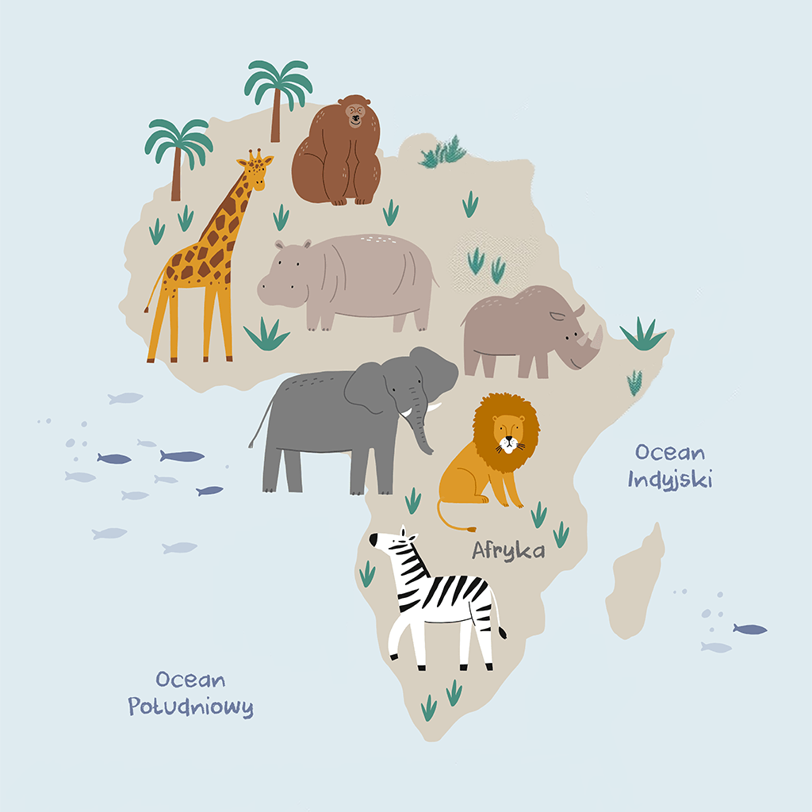

×

Zebra
Zebra to zwierzę charakterystyczne dzięki swoim czarno-białym pasom. Żyje w stadach na sawannach Afryki.
Kliknij na jedno ze zwierząt, aby dowiedzieć się więcej:

Zebra to zwierzę charakterystyczne dzięki swoim czarno-białym pasom. Żyje w stadach na sawannach Afryki.

Lew to król zwierząt, jeden z największych drapieżników w Afryce. Samce mają charakterystyczną grzywę.

Nosorożec to masywne zwierzę z charakterystycznym rogiem. Jest zagrożony wyginięciem z powodu kłusownictwa.

Słoń afrykański to największe zwierzę lądowe na Ziemi. Charakteryzuje się długą trąbą i dużymi uszami.

Żyrafa to najwyższe zwierzę lądowe. Żywi się liśćmi z wysokich drzew dzięki swojej długiej szyi.

Hipopotam to duże zwierzę wodne, które spędza większość czasu w rzekach i jeziorach Afryki.

Goryl to największa małpa człekokształtna. Żyje w lasach Afryki i jest zagrożony wyginięciem.